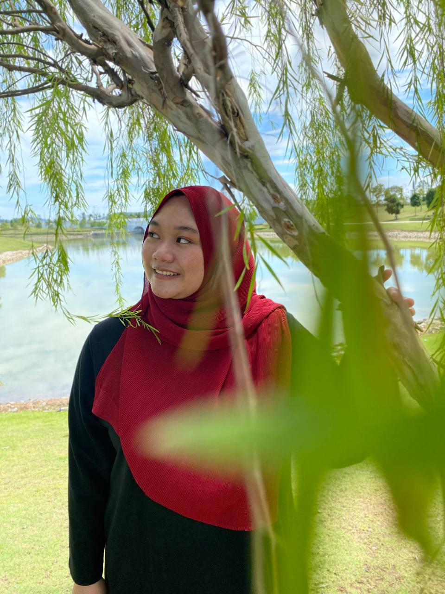

Hello everyone. Let's get to know each other before you go exploring my own website. My name is Nur Aznie Binti Aziz, and I'm Malaysia. I am a Diploma in Information Management, Faculty of Information Management, UiTM Kelantan Branch Machang Campus, semester 5 student. I am now 21 years old, and my birthday is March 09, 2002. Kelantan is the state where I was born. I have three brothers and two sisters. Sekolah Kebangsaan Padang Kala is my primary school, while SMKA Falahiah is my secondary school. I miss my school days since they prepared me to be a productive member of society.Also, what I like the most is that I had many friends in high school and still have friends to this day